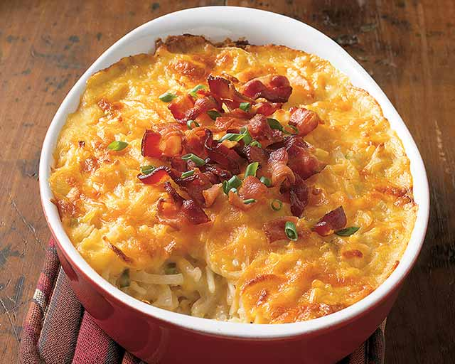

Hashbrown Casserole

Description
This is a perfect breakfast casserole for any holiday morning or just when you're getting the family together for a
delicious breakfast or brunch. It also makes a perfect side dish for Crispy Oven Parmesan Chicken or even served
alongside a Ranch 7 Layer Salad for lunch!
Ingredients
- 1(2 lbs) pack frozen hash brown potatoes, thawed
- 1/2 cup butter, softened
- 1 teaspoon salt
- 1/2 teaspoon grounded black pepper
- 1/2 cup chopped onion
- 1(10.75 oz) can condensed cream of chicken soup
- 2 cups shredded Cheddar cheese
Steps
- Preheat oven to 350°F
- Combine all Ingredients in a large bowl reserving 1/2 cup of cheese for topping
- Place in a greased 9 x 13 casserole dish and top with reserved cheese
- Bake for 45~55 minutes or until hot and bubbly